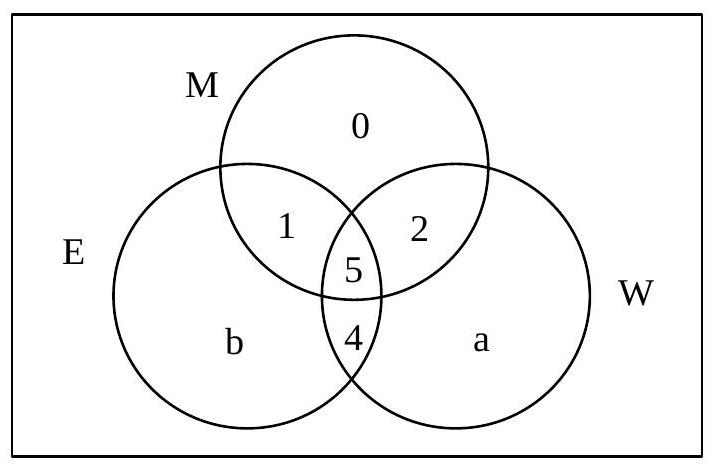
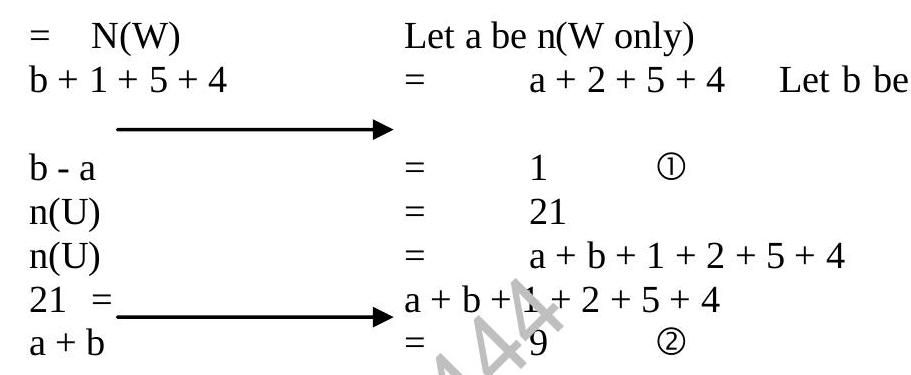
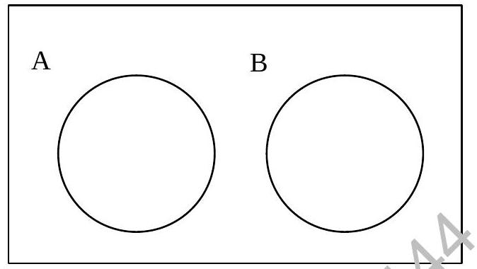
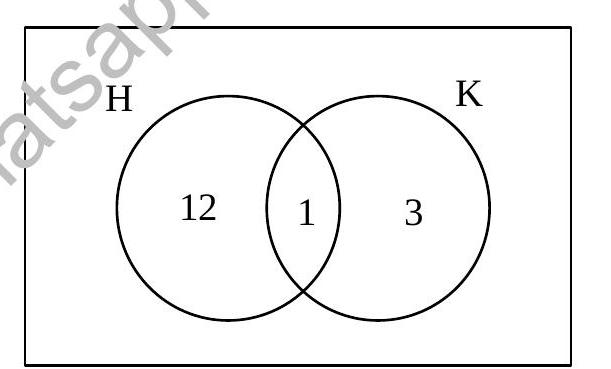
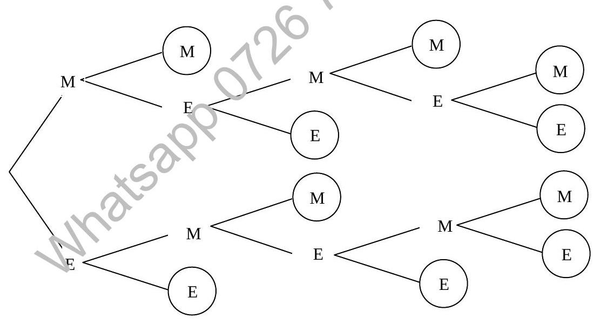

Chapter 4 : Set Notation Representation And Probability (Continued)
4.10 Definition of Probability (Continued)
The arrangement PAD and DAP are two of the total six arrangements. Thus, the probability of the letters appearing either as PAD or DAP is 2/6 i.e. 1/3. In symbols, we write this as:
Note: Probability can never be less than 0 or greater than 1.
4.10.1 Success and Failure
In probability theory, if an event occurs, we say we have a success. The probability of a success is defined as:
If the event we are concerned with does not occur, we have therefore a failure. The probability of a failure is symbolised as q.
Since we have either failure or success for an event, and the total probability is 1, therefore
Example:
- What is the probability of turning up a number greater than 2 with one throw of a dice?
- What is the probability of turning up a number greater than 0?
Solution:
- The number greater than 2 which are on the faces of the dice are 3, 4, 5 and 6. Thus 4 successful events are possible i.e. s = 4.
- There are 2 possible unsuccessful events, therefore f = 2 (i.e. turning up the number 1 and 2).
Hence P(number greater than 2) = $\frac{s}{f+s}$
The numbers 1, 2, 3, 4, 5 and 6 are all greater than 0. Hence there are no unsuccessful events i.e. f = 0
Therefore P(number greater than 0) = $\frac{s}{f+s}$
Example:
What is the probability of drawing a club from a pack of 52 cards? (There are 13 hearts, 13 clubs, 13 diamonds and 13 spades in a pack.)
Solution:
s = 13 (number of clubs)
f = 39 (number of non-clubs)
n = f + s = 39 + 13 = 52 (total cards)
Therefore P(a club) = $\frac{s}{n} = \frac{13}{52}$
where s represents the number of ways a successful event can occur.
f represents the number of ways an unsuccessful event can occur.
n represents the number of all possible ways an event can occur.
The following list gives example of some common probability:
| Events | Probability |
|---|---|
| Certainty of death | p = 1 |
| Sun rising tomorrow | p = 1 |
| The card you pick is not a heart | p = 3/4 |
| Getting heads in tossing a coin | p = 1/2 |
| Newly born baby being a boy (girl) | p = 1/2 |
| A man living 300 years | p = 0 |
4.11 Probability Spaces
Use Venn diagram to depict all possible outcomes in a problem. The number of elements in each set or subset are clearly visible, when the number of elements of the Universal set is known, probability of an event may be obtained.
Example:
Of 21 typists in an office, 5 use Manual typewriters (M), Electronic typewriters (E) AND Word Processors (W); 9 use E and W; 7 use M and W; 6 use M and E; but no one uses M only. 13 use E and 15 use W.
- Using M, E and W to denote appropriate sets, represent the above information in the form of a Venn diagram.
- The same number of typists use E as use W. How many use W only? [This seems contradictory to info above, using diagram values]
- How many typists use E? [Already given as 13]
If typists are selected at random with replacement:
- What is the probability that any 1 person selected is able to use only 1 type of machine?
- What is the probability that any 2 people selected can both use word processors?
Solution:
-

Let n(E only) = a, n(W only) = b.
n(M ∩ E only) = n(M ∩ E) - n(M ∩ E ∩ W) = 6 - 5 = 1
n(M ∩ W only) = n(M ∩ W) - n(M ∩ E ∩ W) = 7 - 5 = 2
n(E ∩ W only) = n(E ∩ W) - n(M ∩ E ∩ W) = 9 - 5 = 4
n(M only) = 0 (given)
Total n(U) = 21
n(U) = n(M only) + n(E only) + n(W only) + n(M∩E only) + n(M∩W only) + n(E∩W only) + n(M∩E∩W)
21 = 0 + a + b + 1 + 2 + 4 + 5
21 = a + b + 12 => a + b = 9 (Eqn 1)
- Given n(E) = n(W) [Contradicts 13 vs 15]. Using diagram values:
n(E) = a + 1 + 5 + 4 = a + 10 = 13 => a = 3
n(W) = b + 2 + 5 + 4 = b + 11 = 15 => b = 4
Check: a + b = 3 + 4 = 7. This contradicts a+b=9 derived from total. There's an inconsistency in the problem statement/diagram values. Assuming diagram values derived from individual overlaps are correct, and total is correct:
21 = 0 + a + b + 1 + 2 + 4 + 5 => a + b = 9.
If n(E) = n(W), then a + 10 = b + 11 => a - b = 1.
Solving simultaneously:
(a + b) + (a - b) = 9 + 1 => 2a = 10 => a = 5
b = a - 1 = 5 - 1 = 4
So, n(W only) = b = 4.
 - n(E) = a + 10 = 5 + 10 = 15.
- P(Only 1 machine) = (n(M only) + n(E only) + n(W only)) / n(U) = (0 + a + b) / 21 = (5 + 4) / 21 = 9 / 21 = 3/7
- P(Both use W) = P(1st uses W) * P(2nd uses W) (with replacement)
n(W) = b + 11 = 4 + 11 = 15
P(Uses W) = n(W) / n(U) = 15 / 21 = 5/7
P(Both use W) = (15/21) * (15/21) = (5/7) * (5/7) = 25/49
4.12 Probability of Combined Events
4.12.1 Addition Law
If the probability of n mutually exclusive events happening are $P_1, P_2, P_3 \ldots P_n$ then the probability that one of these events will occur is:
Events A and B are mutually exclusive i.e. $P(A \text{ and } B) = 0$
4.12.2 General Addition Law
If A and B are two events then
If $P(A \text{ and } B) = 0$ -> A and B are mutually exclusive events.
Example: What is the probability of getting a 2 or a 3 with one throw of an ordinary dice?
Solution:
P(getting a 2) = 1/6
P(getting a 3) = 1/6
These are mutually exclusive.
Therefore P(getting a 2 or a 3) = P(2) + P(3) = 1/6 + 1/6 = 2/6 = 1/3
Example: What is the probability of getting a number not more than 5 with one throw of a dice?
Solution:
Events (1, 2, 3, 4, 5) are mutually exclusive.
P(1) = 1/6, P(2) = 1/6, P(3) = 1/6, P(4) = 1/6, P(5) = 1/6
Therefore P(not more than 5) = P(1) + P(2) + P(3) + P(4) + P(5) = 1/6 + 1/6 + 1/6 + 1/6 + 1/6 = 5/6
Alternatively, the probability of getting a number more than 5 (i.e. a 6) is 1/6
Therefore P(not more than 5) = 1 - P(more than 5) = 1 - 1/6 = 5/6
Example: A card is drawn from a shuffled pack of 52 cards. What is the probability of drawing a king or a heart?
Solution:
P(King) = 4/52
P(Heart) = 13/52
P(King and Heart) = P(King of Hearts) = 1/52
P(King or Heart) = P(King) + P(Heart) - P(King and Heart)
4.12.3 Multiplication Law
If the probability of n independent events are $P_1, P_2, P_3, \ldots P_n$ then the probability that ALL the events will occur is:
Example: What is the probability of getting four heads in four tosses of a coin?
Solution:
P(Head on 1st throw) = 1/2
P(Head on 2nd throw) = 1/2
P(Head on 3rd throw) = 1/2
P(Head on 4th throw) = 1/2
Since tosses are independent,
P(four heads) = P(H1) * P(H2) * P(H3) * P(H4) = 1/2 * 1/2 * 1/2 * 1/2 = 1/16
In general, $P(A \text{ and } B) = P(A) \times P(B|A)$
where $P(B|A)$ means probability of B given that A has occurred.
If A and B are independent then $P(B|A) = P(B)$ (regardless of A) i.e. $P(A \text{ and } B) = P(A) \times P(B)$
Example: What is the probability of throwing two 5's with two throws of a dice?
Solution:
P(5 on 1st throw) = 1/6
P(5 on 2nd throw) = 1/6
Throws are independent.
Therefore P(throwing two 5's) = P(5 on 1st) * P(5 on 2nd) = 1/6 * 1/6 = 1/36
4.12.4 Probability of Events that Occur Together
Example: What is the probability of getting a sum of 7 with a toss of two dice?
Solution: Sample space (all possible outcomes):
| (1,1) | (1,2) | (1,3) | (1,4) | (1,5) | (1,6) |
| (2,1) | (2,2) | (2,3) | (2,4) | (2,5) | (2,6) |
| (3,1) | (3,2) | (3,3) | (3,4) | (3,5) | (3,6) |
| (4,1) | (4,2) | (4,3) | (4,4) | (4,5) | (4,6) |
| (5,1) | (5,2) | (5,3) | (5,4) | (5,5) | (5,6) |
| (6,1) | (6,2) | (6,3) | (6,4) | (6,5) | (6,6) |
There are altogether 36 sample points. n(S) = 36
The set of sample points which give a total of 7 is:
E = {(1,6), (2,5), (3,4), (4,3), (5,2), (6,1)}
n(E) = 6
Therefore the required probability = n(E) / n(S) = 6 / 36 = 1/6
Example: Suppose we toss a coin and then a dice. What is the sample space for this experiment? What is the probability of tossing a (H, 6)?
Solution: If S represent the sample space then
S = {(H,1), (H,2), (H,3), (H,4), (H,5), (H,6), (T,1), (T,2), (T,3), (T,4), (T,5), (T,6)}
Therefore n(S) = 12
Let E be the event of tossing (H, 6).
There is only one sample point with (H, 6) in the sample space.
Therefore n(E) = 1
Therefore P(E) = n(E) / n(S) = 1/12
where S (sample space) represents all possible events,
E represents the required event.
4.13 Tree Diagrams
A (rooted) tree diagram augments the fundamental principle of counting by exhibiting all possible outcomes of a sequence of events where each event can occur in a finite number of ways.
Example:
Marc and Erik are to play a tennis tournament. The first person to win two games in a row or to win a total of three games wins the tournament.
The figure below gives a tree diagram which shows how the tournament can be. The tree is constructed from left to right. At each point (a game) other than an endpoint, there originate two branches which correspond to the two possible outcomes of that game, i.e. Marc (M) winning or Erik (E) winning. Observe that there are 10 end-points corresponding to the 10 possible courses of the tournament:
MM, MEMM, MEMEM, MEMEE, MEE, EMM, EMEMM, EMEME, EMEE and EE
The path from the beginning of the tree to a particular endpoint describes who won which game in that particular course.
(Example continues...)